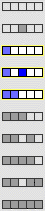
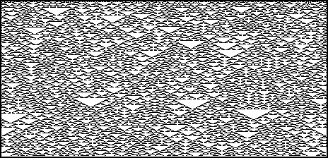

4. Cellular Automata and Fractal Evolution
Classifying Cellular Automaton Behavior
Class III:
Chaotic
Patterns grow in a chaotic fashion: short-lived islands of order and
sensitivity to initial conditions
. Here are two examples.


Return to
Classifying cellular automata
.